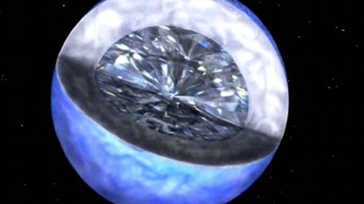
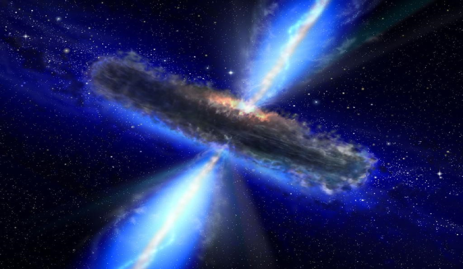
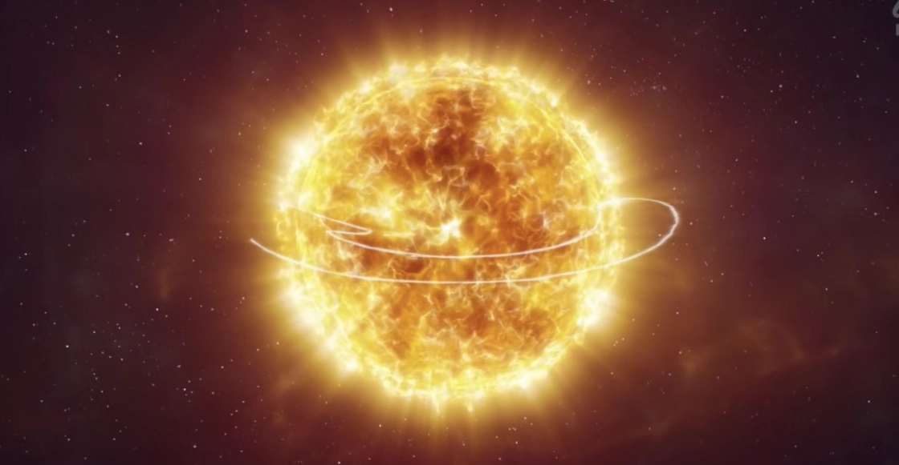
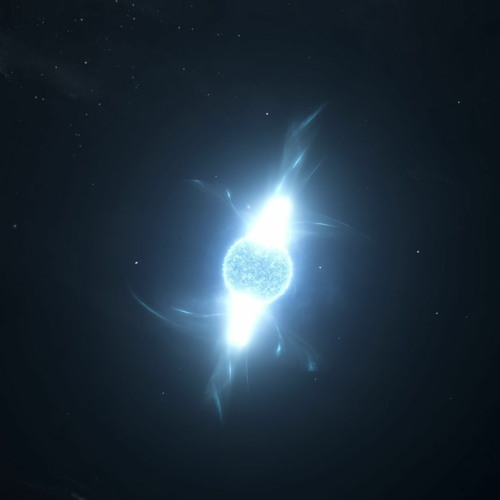
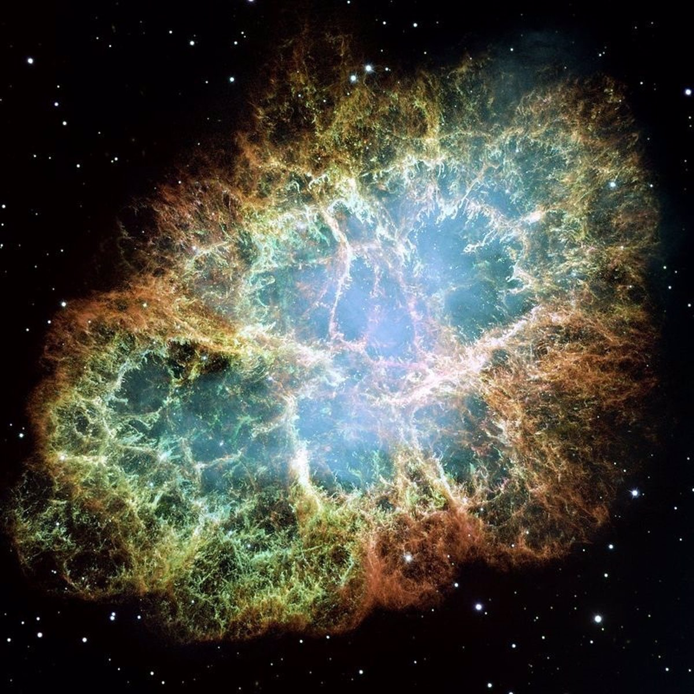
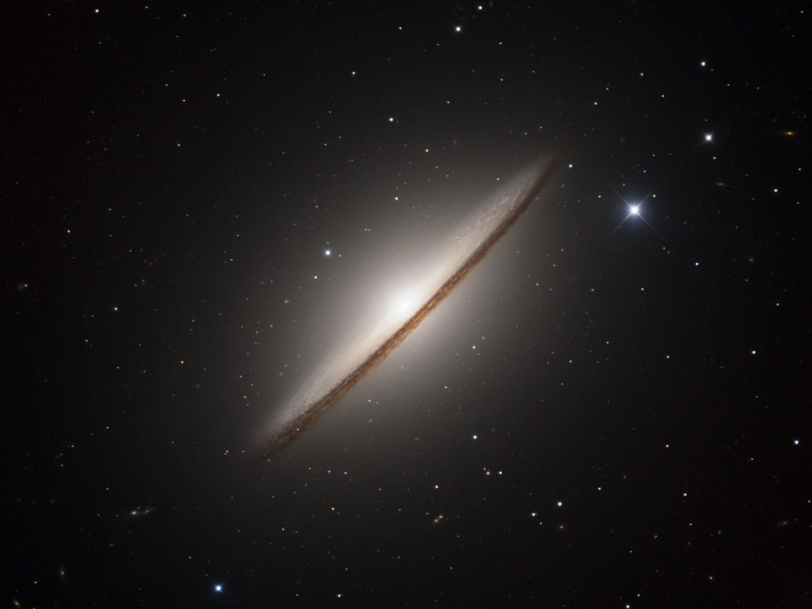
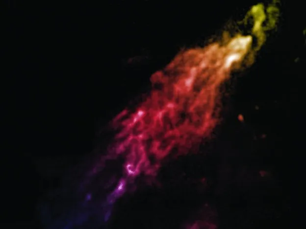

OBSERVATORIO
¡BIENVENIDO AL OBSERVATORIO!
El unverso esta lleno de increibles sucesos que ocurrieron, ocurren y ocurriran, y nos tomamos el tiempo de recopilar las maravillas mas interesantes de los distintos cuerpos celestes que rondan por el basto espacio.
-
ANDROMEDA
La galaxia mas cercana a la nuestra, andromeda, con una edad de 10.01 miles de millones años, y el doble del tamaño de nuesta galaxia.

-
PLANETA DE DIAMANTE
Bautizado como "55 Crancri e", es un planeta con el doble del tamaño que la tierra compuesto de diamante que orbita alrededor de un sol a 40 años luz de la Tierra y llega hasta los 2.148c.
 -
QUASAR
Los quásares son las galaxias recien nacidas y se forman cuando el agujero negro central de la galaxia comienzan a "engullir" toda la materia que se encuentra a su alrededor
 -
UY SCUTY
UY Scuti es la estrella mas grande del universo (conocido), con un radio de 1.700 veces más grande que el de nuestro Sol. Forma parte de la constelación Scutum y se considera una estrella hipergigante “rara”, precisamente por su brillo.
 -
PSR J1748–2446ad
PSR J1748-2446ad es el púlsar giratorio más rápido conocido hasta la actualidad, llegando a girar sobre si mismo 716 veces por segundo.
 -
NEBULOSA CANGREJO
Esta nebulosa son los restos de una supernova en la constelación de Tauro que emite radiación en múltiples longitudes de onda, y se destaca por su pulsar central y la complejidad de su estructura.
 -
MESSIER 104
Tambien llamada la Galaxia del Sombrero, es una galaxia espiral que se caracteriza por un anillo oscuro de polvo cósmico que le da su apariencia distintiva de sombrero.
 -
NUBE DE SMITH
Es una misteriosa nube de gas en la constelación de Escorpio que tiene una velocidad inusualmente alta y se encuentra en una trayectoria de colisión con la Vía Láctea.
